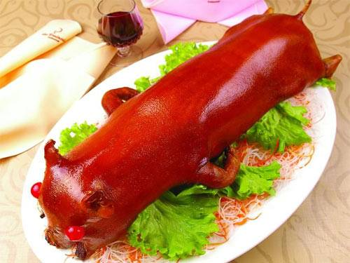

烤乳猪
烤乳猪是广东最著名的特色菜，属粤菜广府菜，并且是“满汉全席”中的主打菜肴之一。早在西周时此菜已被列为“八珍”之一，那时称为“炮豚”。
在南北朝时，贾思勰已把烤乳猪作为一项重要的烹饪技术成果而记载在《齐民要术》中了。他写道：“色同琥珀，又类真金，入口则消，壮若凌雪，含浆膏润，特异凡常也。”一千四百多年前，中国汉族劳动人民烹饪技艺已有这样高深的造诣，实令世人赞叹。
烤乳猪也是许多年来广东人祭祖的祭品之一，是家家都少不了的应节之物，用乳猪祭完先人后，亲戚们再聚餐食用。
发展历史
在中国，它早在西周时代就被列为“八珍”之一，那时称为“炮豚”。南北朝时，贾思勰已把烤乳猪作为一项重要的烹饪技术成果而记载在《齐民要术》中了。他写道：“色同琥珀，又类真金，入口则消，壮若凌雪，含浆膏润，特异凡常也。”一千四百多年前，我国的烹饪技艺已有这样高深的造诣，实令世人赞叹。
烤乳猪从中原大地传到广东后，粤菜厨师用木炭为燃料经过精心改良，使广式烤乳猪风味独特，逐渐成为烧乳猪的经典。广东厨师为了使乳猪甘香，创造了腌制的“三板斧”。一是香料涂腔，即用优质香料涂抹乳猪内腔；二是糖水淋身，即用冰糖开成糖水烧沸淋遍乳猪全身；三是浓汁刷皮，即用柱侯酱、南乳等广式酱料开成汁酱、在猪皮上涂抹均匀。在烧烤时，采用“三步烤”，先是全猪小火烤15分钟，然后把头臂烤10分钟，用花生油涂遍猪皮后烤猪身30分钟。广式烤乳猪除了烤工要得，上碟时刀工也是绝技。师傅把全猪在耳朵下边脊背部和尾部脊背处各横切一刀，分成两片，在每片中线又各直切一刀成四条，用刀分别将皮去，每条切成8块共32块上碟。
清朝康熙年间，烤乳猪是宫廷名菜，成为“满汉全席”中的一道主要菜肴。随着“满汉全席”盛行，烤乳猪曾传遍大江南北。在广州，烤乳猪在餐饮业中久盛不衰，深受食客青睐。
用乳猪为主料制作而成，在旧京食馔中应算是“阳春白雪”，是宫廷中达官富绅宴饮时吃的一道名菜。后传到各地，也是广州最著名的特色菜，在誉满中外的广东烧烤中，此菜堪称一绝。
烤乳猪是许多年来广东人祭祖的重头戏，几乎是家家都少不了的应节之物，用乳猪祭完先人后，亲戚们聚会大吃一顿。清明前，广东各地的宾馆、酒店都纷纷将烤乳猪作为清明祭品销售的一大招牌，在大门口大做广告。那一只只乳猪烤得焦黄，是祭祖仪式上最为诱人的祭品。清明期间，有点名气的酒家可卖出烧猪几百只，每只乳猪一般在2公斤到5公斤重左右。各地的养猪场每年到这个时候，都有小猪专门提供给各个酒家，用来制作烧猪。
食用禁忌
敢卖烤乳猪的饭馆都不是那种街头小馆，都有一定实力，但是也不排除技术不到家或偷工减料的情况。主要是使用调料不全和烤制不到位。表现为猪皮颜色和口感不正，猪肉过老发柴，调料的香气不足。还要防止吃到“剩货”。如果猪皮抽缩，颜色黯淡，入口发硬，则定是“剩货”无疑。
这是一道大菜，适合人多或高档正式宴请，地位相当于燕窝鱼翅，做主菜绝对够格。若人较少也可以点“份餐”，虽然没有“全猪”气派，品尝风味是没有问题的。正因为是大菜，一般的饭馆没有，要到比较“正宗”的大粤菜馆才能吃到，大多数情况下要事先预订，并且对价格要有心理准备。
猪皮含大量胶原蛋白，有养颜健肤功能。乳猪较瘦，脂肪含量少，老年人亦可放心食用。